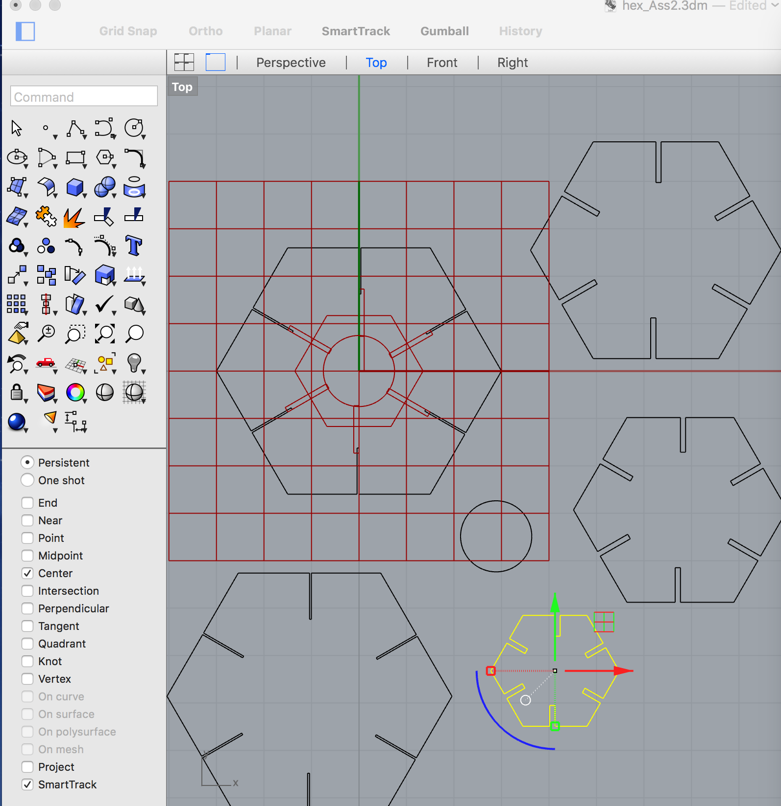
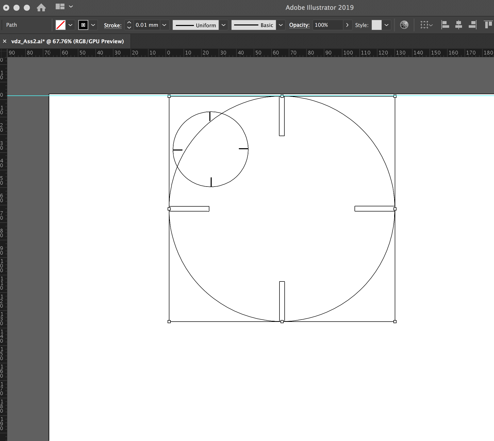

Lighting Creation : 3d + Laser Pieces
Native AI FileRhino File

I began sketching ideas for a lamp shade that could be affixed to the pendant style electrical component I found at World Cost Plus.


After taking all of the measurements I might need for fitting a shade on to the electrical componenet I started to create a shape in Rhino.
I began with a cylinder and then switched to a Circle geometry. I extruded the circle shape, capped it and then created a new identical shape
except it was slightly smaller, and used the smaller shape to delete the interior of my solid cylinder leaving a 3 dimensional can for the basis
of my lamp shade.

because they estimated my"can" shape would take 8 hours to print.I went back to my sketch pad and modified my design by removing the sides.
I created a new file in Rhino this time using the cylnder geometry to create a disc.
It took 2.5 hours to print this disc/lamp component in the 3d printer. ALARMING:It appeared the filament had seeped to make the apertures for
inserting my laser pieces to narrow!
MEANWHILE I went shopping for material for the laser pieces of the lamp shade at the front desk.I chose a translucent blue acrylic because it
looked best with my gray filament color.
I designed the "shade" piecies in AI—omg So easy LOL.I put the file on the Mill computer and chose settings of 5/speed, 100 for both frequency/power.
I tested before printing on a scrap.
The pieces dropped out with no effort,perfectly.
Now the scary part : Will the acrylic and filament components fit together?

With putting on some pressure and wiggling they did : YAY.
I also inserted the lighting element which fit as intended.

I played with resizing the dimensions of my hexagon within Grasshopper.It worked:YAY.
I next exported a single shape to AI.

I had an issue initially but solved it by changing units to inches vs. of mm.


Despite my AI file matching the size of my board(s),
with the hexagon I had a problem. Adjusting the positioning of the laser did NOT solve the problem. I re-hit print on the computer,
and this time it aligned and cut my shapes as defined in my AI file.


THANK YOU to our colleague Ani for his time and excellent guidance.